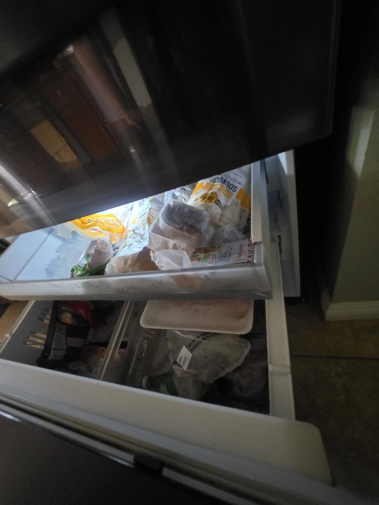

LG Refrigerator Condenser Fan Is Not Working — Possible Fan Motor or Main Control Board Failure
An LG refrigerator depends on several components working together to maintain the correct temperature. One of the most important is the condenser fan. If the condenser fan is not running, the refrigerator may struggle to remove heat from the refrigeration system, causing longer cooling cycles, rising temperatures, unusual noises, or even complete cooling failure.
Read More »